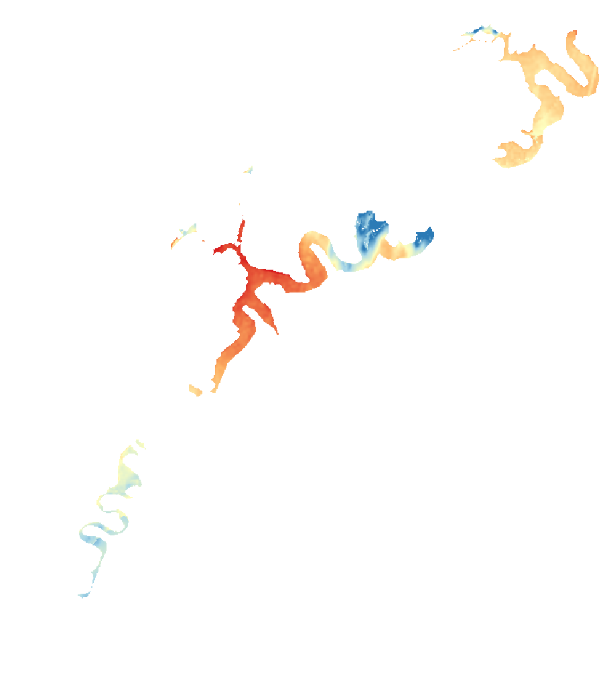

LakeScope › PA
Raystown Lake today
Updated 2026-11-07 - Atlas Labs
58°F water, level falling, 6 ft below normal, calm this morning.
Water level
779.90 ft
USGS gauge 01563100 - 2026-11-07
7-day trend: falling (-3.27 ft). Compared with normal for this date: -5.8 ft (same weeks, 2016-2025).
Water clarity and algae
No fresh view yet No clear view yet.
Surface temperature
58°F
seen from space on 2026-11-04

Ice
Open - 0% ice cover
Ice thickness is an estimate from air temperature, not a measurement. Check the ice yourself before going on it.
Weather, next 3 days
| Day | Sky | High / low | Wind | Rain |
|---|---|---|---|---|
| Saturday | Mostly Sunny then Scattered Rain Showers | 53 / 40°F | 12 mph W | 23% |
| Sunday | Mostly Sunny | 61 / 42°F | 9 mph W | 0% |
| Monday | Mostly Sunny | 58 / 37°F | 13 mph W | 1% |
Sunrise 06:49 - sunset 17:02 - Waning crescent. National Weather Service.
Get the LakeScope app: alerts and the 3-D view of Raystown Lake